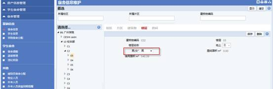
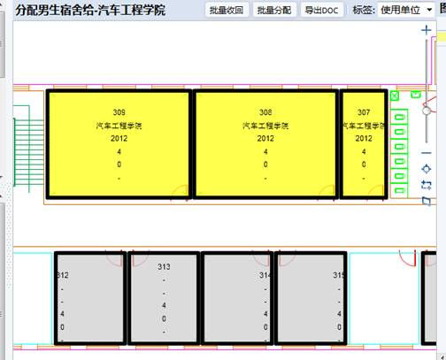
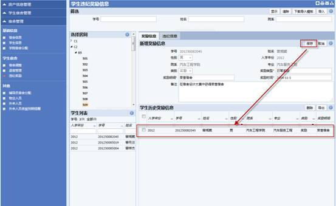
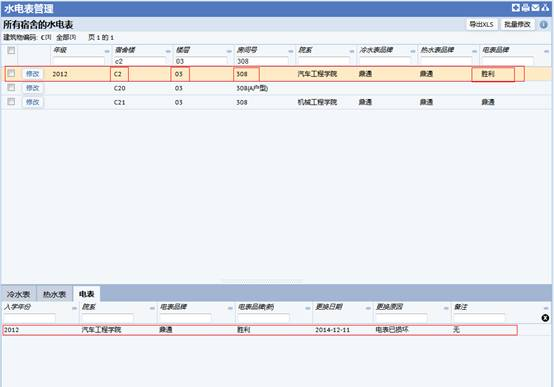
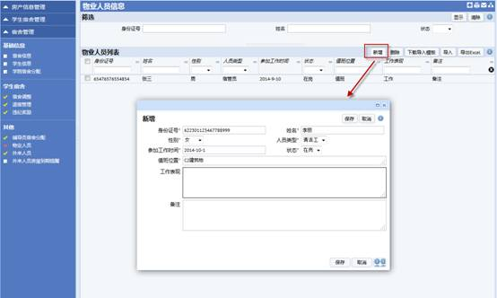
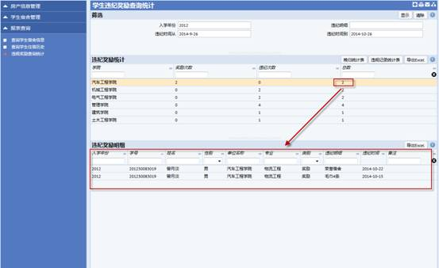
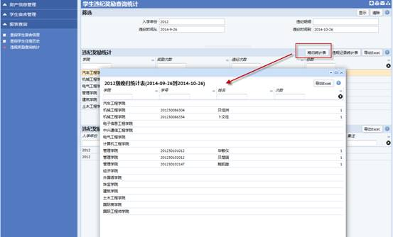
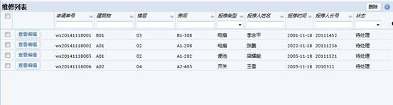

1 运行环境
1.1 硬件配置
应用服务器和数据库服务器：
1.2 操作系统的名称和版本号
服务器端操作系统：
1.3 数据库管理系统的名称和版本号
数据库选用Oracle 11g。
1.4 应用服务器中间件的名称和版本号
Jetty
2 安装与初始化
已安装到华南理工大学广州学院网络中心及后勤处老师的电脑上，此处略。
3 二级单位使用
3.1 说明
本模块分为两大部分：定义教职工和分配公房
提示步骤：管理员进入当前页面可以进行一系列的操作：查看公房情况、给教职工分配公房、定义教职工、查看教职工、变更房屋用途等，具体操作如下：。
3.2 查看公房情况
3.2.1.1 概要说明
查看公共用房使用情况
打开界面的初始加载界面如下：
3.2.1.2 操作步骤
查看：
步骤1：可查看到办公用房在各楼层中的位置；
步骤2：通过右侧数据显示区“使用单位房屋类型统计”可查看到各房屋类型的数量及占用面积；
步骤3：通过下方的数据展示区“使用单位所有房间列表”可查看到使用单位所有房间的详细信息。
导出：
步骤1：点击“导出”按钮，把相应的图片导入Word中。
步骤2：点击“XLS”按钮，把相应的数据导入Excel中。
3.3 分配公房给教职工
3.3.1.1 概要说明
为教职工分配公共用房
打开界面如下：
3.3.1.2 操作步骤
查看：
步骤1：在左侧的数据展示区选择楼层和教职工，或在上方的筛选区输入建筑物编码等信息快速查找建筑物楼层及教职工。然后在右侧的图例上选择一个房间，在下面的“分配房间”会显示出该教职工的信息，单击“保存”按钮完成，单击“恢复全部”按钮恢复到主界面。
步骤2： 单击筛选区的“编辑教职工”按钮会跳转到定义教职工界面，详见<定义教职工>界面说明。
步骤3：单击“刷新”按钮，可刷新教职工列表。
导出：
步骤1：点击“导出DOC”按钮，把相应图片导入Word中。
分配公房：
步骤1：选择建筑物及楼层后，根据需要选择教职工，在“分配房间”菜单栏下点击“保存”按钮，点击“清除”按钮，清除指派人员。
步骤2： 点击“选择教职工”菜单栏下的“撤销指派”按钮，可取消已有的指派任务。
3.4 定义教职工
3.4.1.1 概要说明
新建、编辑修改教职工信息
打开界面的初始加载界面如下：
3.4.1.2 操作步骤
查看：
步骤1：可查看已有教职工的信息，点击一个员工可查看到其详细信息，并可对其进行修改和保存，也可点击“删除”按钮，删除已有信息，点击取消回到打开定义教职工时的初始页面；
步骤2：通过上方的筛选区输入姓名、工号、所属单位、部门编码筛选条件，点击“显示”按钮，速查找到某个员工，然后进行修改，点击“清除”按钮，清空筛选栏；
新建：
步骤1：点击“新建”按钮，新建教职工信息
工号：必填，按实际情况填写；
姓名：必填，按实际情况填写；
性别：按实际情况选择；
电子邮箱：按实际情况填写；
单位名称：必填，有列举字段，根据实际情况选择；
科室名称：有列举字段，根据实际情况选择；
建筑物编码：有列举字段，根据实际情况选择；
楼层：有列举字段，根据实际情况选择；
房间号：有列举字段，根据实际情况选择；
教职工编制：选择，系统提供选择值为在编、外聘，按实际点击选择即回到新建页面；
职称：有列举字段，根据实际情况选择；
职务：有列举字段，根据实际情况选择；
标准职称：有列举字段，根据实际情况选择；
岗位：有列举字段，根据实际情况选择；
岗位级别：按实际情况填写；
标准身份代码：有列举字段，根据实际情况选择；
省份证号码：按实际情况填写；
出生日期：点击日期选择项，根据实际进行选择；
手机：按实际情况填写；
固定电话：按实际情况填写；
民族：按实际情况填写；
见习转正日期：点击日期选择项，根据实际进行选择；
参加工作时间：点击日期选择项，根据实际进行选择；
来校时间：点击日期选择项，根据实际进行选择；
学历：选择，系统提供选择值为研究生、本科、专科、高中、高中肄业、初中、初中肄业、小学、小学肄业、相当大专、中专、技工、相当大学、中技，中等专业或中等技术、无，按实际点击选择即回到新建页面。
在岗状态：有列举字段，根据实际情况选择；
政治面貌：选择，系统提供选择值为共青团员、九三、民革、民建、民盟、民主促进会、农工、群众、台盟、无党派、预备党员、致公、中共党员、未知，按实际点击选择即回到新建页面。
擅长：按实际情况填写；
照片：点击“浏览”按钮选择后点击“上传”按钮进行图片上传。
步骤2：点击保存，保存已编辑的信息；点击删除，删除已编辑的信息；点击取消，取消已编辑的信息。:
编辑：
步骤1：点击“编辑在岗状态”按钮，显示定义在岗状态页面，如下图，点击已有的在岗状态可根据实际对其进行修改和删除。点击“新建”按钮，新建在岗状态。
在岗状态代码：必填，按实际情况填写；
在岗状态：按实际情况填写；
在岗状态描述：按实际情况填写。
3.5 查看教职工
3.5.1.1 概要说明
查看、编辑教职工的基本信息，并可查看教职工所在的房间信息
打开界面如下：
3.5.1.2 操作步骤
查看：
步骤1：选择一个教职工，点击【详细】按钮可查看该教职工的基本信息、详细信息、教职工照片、定位员工所在房间；
步骤2：选择教职工可以从左边的导航列表中选择，也可在上面的搜索栏中按教职工姓名、所属单位、职称筛选条件进行查找；点击【显示】按钮，可刷新左边导航栏列表，点击【清除】按钮，清除已有信息。
例如：查询姓名为“张莉”的教职工的信息
步骤3：点击教职工所在的房间，弹出“房间信息卡片”界面，显示该房间的房间信息和办公人员信息。
编辑：
步骤1：单击 【编辑教职工】按钮弹出定义教职工界面，详见<定义教职工>界面说明。
步骤2：单击图片上的房间，会显示该房间的信息，包括房间信息、办公人员的信息，如“查看”操作步骤3.
步骤3：点击“房间信息卡片”界面上的【编辑房间名称】按钮，弹出“编辑房间名称”页面，如下图，输入房间名称，单击【保存】按钮保存该名称，单击【取消】按钮返回到“房间信息卡片”页面。
3.6 变更房屋用途
3.6.1.1 概要说明
修改房屋的用途
打开界面如下：
3.6.1.2 操作步骤
查看：
步骤1：界面左方是数据展示区，可以在这里选择楼建筑物及楼层，同时也可以通过上方的筛选栏，输入建筑物编码和房屋类别，点击“显示”按钮，可搜索出相应的建筑，从而进行房间用途的修改，点击“清除”按钮，清空筛选栏。
步骤2：通过右侧的图例了解房屋现在的用途。单击数据展示区图片上的房间，会显示该房间的信息卡片，显示出房间信息以及办公人员信息。如下图。
步骤:3：点击“全屏显示”按钮全屏显示图片。:
变更：
步骤1：点击“变更用途”按钮，显示变更用途对话框，如下图，输入房间名称、大类名称、类别名称、类型名称（区别于以前的），单击保存按钮改变房间的用途。
步骤2：在指派栏下输入变更后房屋类别和变更后房屋类型，单击“保存”按钮，完成房屋用途的变更。单击“取消”按钮回到打开变更房间用途时的初始页面。
导出：
步骤1：点击页面上的“导出DOC”按钮会把相应的图片导入Word中。
修改房间名称：
步骤1：单击页面上的“编辑房间名称”按钮，跳转到“编辑房间名称”页面，如下图，输入房间名称，单击“保存”按钮保存该名称，单击“取消”按钮返回到“房间信息卡片”页面。
4 学生宿舍管理
4.1 说明
学生宿舍管理主要涉及到两个角色：学生处管理中心、二级单位管理员
目前我们(ARC)系统提供两个测试账号：
学生处管理中心： 账号：0909 密码：afm 所在单位：学生处
二级单位管理员： 账号：0908 密码：afm 所在单位：汽车管理学院
4.2 背景数据
4.2.1 定义违纪奖励
4.2.1.1 概要说明
定义违纪奖励的类型、明细，是为了在录入学生违纪奖励信息时，能够直接选择违纪类型和违纪明细。
4.2.1.2 操作步骤
Q：新增一个重大违纪，包含破坏门窗。
步骤1：点击【新增】按钮，选择违纪类型，打开新增违纪类型界面，填写违纪类型、备注信息，确认无误后，再点击【保存】按钮。
步骤2：保存成功之后，在违纪列表中会自动显示重大违纪，点击重大违纪，然后点击【新增】按钮，选择违纪明细，打开违纪明细界面，填写违纪明细、备注信息，确认无误后再保存。
步骤3：点击【保存】按钮，保存成功之后，在左边的违纪列表中就会看到添加的记录。
4.2.2 定义年级
4.2.2.1 概要说明
在校年级列表中显示的是目前在校的年级，主要是来确定现在在校的是那些年级，方便系统中的统计计算。
4.2.2.2 操作步骤
一、新增
点击【新增】按钮，打开定义年级界面，填写年级(四位数，例如：2014)，然后点击【保存】按钮。
二、删除
点击需要删除的年级，然后点击【删除】按钮。
4.3 宿舍管理
4.3.1 宿舍信息
对宿舍信息进行维护，主要维护房间字段：男/女、房屋类别、房屋类型、标准床位数
1、建筑物信息中维护字段：男/女
如果整栋建筑物是男生宿舍时，更改‘男/女’属性=‘男’，就会把这栋建筑物下的所有房间更改为男生宿舍。同理，女生宿舍也适用。
如果整栋建筑物同时有男生宿舍和女生宿舍，那么就设置为‘男/女。

2、楼层信息中维护字段：男/女
由于一栋建筑物中同时有男生宿舍和女生宿舍，那么就可以更改楼层字段的：男/女来更改该楼层下的房间的男女属性。
如果一栋建筑物的01层是男生宿舍，那么更改‘男/女’属性=‘男’，就会把这一层下所有房间更改为男生宿舍。同理，女生宿舍也适用。

3、房间信息中维护字段：男/女、类别名称、类型名称、年级、使用单位、标准床位数
男/女：必填，如果该房间是男生宿舍，那么选择‘男’。同理，女生宿舍也适用。
类别名称：必填，所有的宿舍都是‘学生宿舍（公寓）’。
类型名称：必填，选择值有：学生居室、辅导员用房、活动室、厕所、盥洗室。
如果是辅导员居住的，那么就选择‘辅导员用房’。其他的同理。
标准床位数：必填，决定这个房间有几个人居住。
如果有是四人间，那么就填写‘4’。其他的同理。
年级：可选，决定这个房间是分配给那一级的学生居住。
如果分配给2014级的居住，那么就填写‘2014’。其他的同理。
注意：如果选择了‘年级’那么就必须要选择‘使用单位’。如果填写了年级，而没有填写使用单位，那么就要在【学院宿舍分配】界面中进行分配。
使用单位：可选，决定这个房间是分配给那个学院的学生居住。
如果分配给‘汽车工程学院’的学生居住，那么就选择‘汽车工程学院’。其他的同理。
注意：如果选择了‘使用单位’那么就必须要选择‘年级’。如果填写了使用单位，而没有填写年级，那么就要在【学院宿舍分配】界面中进行分配。
4.3.2 学生信息
学生信息目前我们是通过学校提供的Excel导入的，等后续和数据平台对接之后会实时动态获取最新数据。
目前我们可以通过界面中的【导入】按钮进行导入，但是在导入时需要使用我们提供的导入模板，通过【下载导入模板】进行模板下载。
4.3.3 学院宿舍分配
4.3.3.1 概要说明
依据学生宿舍管理中心的宿舍分配计划将各宿舍分配给相应二级院系(非宿舍空间不做分配),以备各学院根据其内部计划要求安排学生至相应宿舍。
打开界面的初始加载界面如下：
4.3.3.2 操作步骤
步骤1：在筛选面板中选择一个学院（点击绿色画圈按钮进行选择），选择一个入学年份（系统默认是当前年）。
例如：选择学院‘汽车工程学院’，入学年份为2012。现在给汽车工程学院的2012级的分配宿舍。
步骤2：点击【显示】按钮，会自动刷新男生宿舍分配界面和女生宿舍分配界面。在男生宿舍分配界面中，选择宿舍楼层面板中会显示所有的男生宿舍（目前是显示所有年级的男生宿舍包括已经分配完成的），左下角会自动显示‘汽车工程学院2012级’的学生汇总信息：男生总人数，总共分配床位数、还需分配床位数、已经分配房间数。
男生总人数：是指‘汽车工程学院2012级’在校学男生的人数之和。
已分配房间数：是指总共分配给‘汽车工程学院2012级’的男生宿舍的房间数。
总共分配床位数：是指每一间已分配的房间*该房间的标准床位数的总和。
还需分配床位数：是指男生总人数-总共分配的床位数。
步骤3：选择需要分配的楼层。例如：将C2的3楼的307、308、309（由于男生总共有12个，房间是4人间，所以需要3个房间）分配给‘汽车工程学院2012级’。
点击C2的3楼，打开CAD图纸，点击307、308、309（CAD图纸会高亮选中的房间），系统会自动把选中的房间添加到分配面板中。
批量分配：
如果要把某一层全部分配给一个学院，就不需要再CAD图纸上一一点击保存，直接点击【批量分配】按钮就可以把整层分配给一个学院。
批量收回：
如果某一级学生毕业了或者分配错误，那么就通过【批量收回】按钮进行操作。
步骤4：点击【保存】按钮，就会把房间307、308、309分配给‘汽车工程学院2012级’，同时会刷新左下角的面板中的已分配房间数、总共分配床位数、还需分配床位数。
放大已经分配房间的CAD图纸，在图纸上显示的内容依次（从上到下）是：房间号、使用单位（学院）、年级、标准床位数、已经入住人数、入住人姓名。

步骤5：按照以上4个步骤给‘汽车工程学院2012级’的男生、女生分配宿舍，分配完成后，可以点击【本单位宿舍分配信息】按钮，查看汽车工程学院的各个年级的学生人数、房间数、总床位数、已分配床位数、空余床位数。
学生人数：是指汽车工程学院某一级的学生总人数（男生+女生）。
房间数：是指分配给汽车工程学院某一级的房间数。
总床位数：是指分配给汽车工程学院某一级的每一房间*该房间的标准床位数总和。
已分配床位数：是指已经分配给学生的床位数（已经入住）。
空余床位数：总床位数-已分配床位数。
如果全校所有学院的房间已经分配完成，可以点击【全校宿舍分配信息】按钮，查看所有学院的分配情况，并且可以导出Excel。
4.3.4 宿舍分配
4.3.4.1 概要说明
使用二级单位管理员账号(0908)登录系统。
各学院负责将学院内学生分配至学院内部相应宿舍，每个学生分配一间宿舍
4.3.4.2 操作步骤
步骤1：在筛选面板中选择一个入学年份（默认情况下是当前年份）。由于我们是给汽车学院2012级的男生宿舍分配的房间，所以入学年份选择2012。
步骤2：点击【显示】按钮，会刷新男生宿舍分配界面和女生宿舍分配界面。在男生宿舍分配界面中，选择宿舍楼层面板中显示分配给‘汽车工程学院2012级’的房间所在的宿舍、楼层。因为我们在上面只给‘汽车工程学院2012级’分配了C2-03的307、308、309房间。所以只显示C2的03层。同时点击03层打开CAD图纸，只有房间307、308、309高亮可用。
选择学生面板中就只有2012级的未分配房间的男生。
步骤3：选择学生（谭皓云、倪政熙）、然后点击308房间（308是四人间，如果房间为空，也可以一次选择好4个学生），学生分配信息就会在分配面板中显示，确认无误后再保存。
步骤4：点击【保存】按钮，打开选择入住时间信息的对话框。填写入住时间、钥匙和辅导员信息，确认无误后保存。
步骤5：保存成功之后，选择学生面板中自动过滤掉刚才已经分配宿舍的学生，同时CAD图纸中高亮颜色会改变。（查看图例，绿色是空置的，浅黄是符合容量）。
放大CAD图纸。可以看到CAD图纸上显示（从上向下）是：房间号、使用单位（学院）、标准床位数、已住人数、已住人姓名，房屋类型。
步骤6：所有学生分配完成之后，可以点击【已分配信息】按钮，打开分配房间列表界面进行查看，如果分配错误还可以进行删除，再重新分配，同时可以导出Excel。
4.3.5 宿舍调整
4.3.5.1 概要说明
对于需要调整宿舍的学生申请，经线下审批通过后，由学生宿舍管理中心老师将其由原来的宿舍调整至所申请宿舍中。
4.3.5.2 操作步骤
步骤1：在筛选面板中填入需要调整的学生、宿舍楼信息进行筛选。
Q：把刚才汽车工程学院2012级的司徒欢从315调整到318。
步骤2：点击【显示】按钮，会刷新男生宿舍调整界面和女生宿舍调整界面，在男生宿舍调整界面中，选择宿舍楼层面板中显示所有的男生宿舍楼层。
选择学生面板中只显示‘司徒欢’的基本信息：学号、姓名、使用单位（院系）、入学年份、宿舍、楼层、房间、入住时间。
步骤3：点击C2-03，打开CAD图纸并且放大图纸，可以看到‘司徒欢’在315房间中，现在调整到318房间。
选中‘司徒欢’，点击CAD图纸中318，系统会自动把宿舍分配信息显示在分配面板中。
确认无误后再进行保存。
步骤4：点击【保存】按钮，打开调整申请内容界面，填写调整时间、调整原因、钥匙、备注信息。确定调整信息无误后点击【确定】按钮。
步骤5：保存成功之后，‘司徒欢’就从315调整到了318。
4.3.6 退宿管理
4.3.6.1 概要说明
提供基于学生入住（宿舍分配）、退住、宿舍调整所形成的入/退住历史记录的信息查询功能
4.3.6.2 操作步骤
步骤1：选中要退宿的学生，然后进行退宿。
例如：把学生‘司徒欢’退宿。
步骤2：点击【退宿】按钮，打开退宿信息界面，填写退房时间、钥匙、退房原因、备注信息。确认无误后，再进行保存。
步骤3：点击【确定】按钮保存成功后，在申请单列表中将看不到‘司徒欢’的记录。
4.3.7 违纪奖励
4.3.7.1 操作步骤
违纪奖励界面中，选择房间面板显示所有的宿舍。学生列表显示所有的已经分配房间的学生。
一、通过新增按钮新增违纪奖励记录
例如：给C2-03-309房间的‘曾湘葳’增加奖励信息。
步骤1： 首先选择C2宿舍楼的3层309房间，在该房间中的学生就会在学生列表中显示，点击‘曾湘葳’记录的任何一个数据信息，在右边奖励信息界面的新增奖励信息中填写奖励类型、奖励明细、奖励时间、备注信息，确认无误后再保存。
步骤2：点击【保存】按钮，保存成功之后，系统会自动把该条数据显示在学生历史奖励信息面板中。如果信息有误，点击【删除】按钮进行删除，再重新填写。

二、通过批量导入违纪记录
批量导入有两种：不熄灯和其他
不熄灯针对的是一个个房间，其他则是针对一个个的学生。
步骤1：点击【下载导入模板】或【下载不熄灯模板】按钮，下载导入模板Excel到本地。
导入模板Excel如下：

步骤2：按照导入模板的Excel要求填写数据，确认无误后保存Excel，在界面点击【导入】按钮，打开导入学生违纪奖励信息界面，选择导入类型为“不熄灯”或者“其他”，选择完成后点击【下一步】按钮，进入导入文件面板；点击【浏览】按钮，选择刚才保存的Excel，然后点击【开始导入】按钮，开始导入数据。
步骤3：导入完成之后，可以查看导入情况，如果还需要导入，点击【再次导入】按钮；如果不再导入，点击关闭。
步骤4：导入【其他】类型的Excel成功后，在学生列表点击学号为‘201230082005’的记录，在违纪信息界面中的学生历史违纪信息中就可以看到刚才导入的信息。
步骤5：导入【不熄灯】类型的Excel成功后，在楼层数中选择你导入的宿舍楼-楼层-房间号，在宿舍历史违纪信息界面中的宿舍历史违纪信息中就可以看到刚才导入的信息。
4.3.8 水电表管理
4.3.8.1 概要说明
查询各建筑物、宿舍房间的水电表管理，进行批量修改，并查询修改的历史记录的信息查询
4.3.8.2 操作步骤
修改：
步骤1：首先，可以先在字段下方的输入框中查询你所需要的房间，查询出来后，点击修改按钮。
例如修改C2-03-308房间的水电表
步骤2：在弹出的窗口中，选择你所要修改的水电表(可以只修改一个，没填写的默认不修改)，按实际情况填写信息，注意带*为必填字段。如：修改电表品牌为“胜利”。
步骤3：点击【保存】按钮，修改完成后可点击“宿舍楼”“楼层”“房间号”等数据，查看308房间的水电表修改记录。如下图：

批量修改：
步骤1：选中你所需要修改的房间，点击右上方的【批量修改】按钮。
步骤2：在弹出的【编辑品牌】界面中，按实际情况填写冷水表、热水表、电表品牌信息,其中更换日期、更换原因为必填字段。修改完成后点击【保存】按钮，
步骤3： 点击所修改的房间的“宿舍楼”“楼层”“房间号”字段，查询当前房间的修改记录，在下方界面还可以查看该房间冷水表、热水表、电表的修改记录。
4.3.9 辅导员宿舍分配
4.3.9.1 操作步骤
步骤1：页面初始加载后，在选择宿舍楼层面板中显示的是房屋类型为‘辅导员用房’的宿舍。在选择辅导员面板中显示教职工表中岗位级别为‘辅导员’的教职工。
点击04层，打卡CAD图纸，可以看到只有401、402、403高亮，因为401、402、403是辅导员用房，其他的不是。
步骤2：选择一个教职工（孙忠儒），然后点击401，系统会自动把教职工和房间信息显示在分配面板中，确认无误后再保存。

步骤3：点击【保存】按钮，弹出选择入住时间的界面，填写钥匙、入住时间，确认无误后，点击【保存】。
步骤4：保存成功后，在选择辅导员列表中就看不到孙忠儒的记录，同时在CAD图上可以看到该职工已经在401中了。
步骤5：把所有的辅导员分配完成之后，点击【已分配信息】按钮，可以查看已经分配房间的辅导信息，如果有错误，可以删除，然后重新进行分配，同时也可以导出Excel。
4.3.10 物业人员
4.3.10.1 概要说明
建立宿管员及清洁岗位的人员台账，并提供查询功能。
4.3.10.2 操作步骤
一、通过新增按钮新增一个物业人员。
步骤1：
点击【新增】按钮，打开新增界面，填写身份证号、姓名、性别、人员类型、参加工作时间、状态、值班位置、工作表现、备注信息，确认无误后再保存。

步骤2：保存成功之后，在物业人员列表中可以看到新增的记录，如果还需要补充信息，在某一记录的身份证上点击一下就会弹出修改界面，修改完成之后，点击【保存】按钮即可完成修改。
二、通过批量导入新增物业人员。
步骤1：点击【下载导入模板】按钮，下载导入模板Excel到本地。
导入模板如下：
步骤2：按照导入模板的Excel要求填写数据，确认无误后保存Excel，在界面点击【导入】按钮，打开物业人员导入界面，点击【浏览】按钮，选择刚才保存的Excel，然后点击【开始导入】按钮，开始导入数据。
步骤3：在导入进度界面，可以查看导入情况，如果还需要导入，点击【再次导入】按钮；如果不再导入，点击关闭。
步骤4：关闭物业人员导入界面后，发现成功导入的数据在物业人员列表中没有显示，此时点击【刷新】按钮，就可以看到导入的数据。
4.3.11 外来人员
4.3.11.1 概要说明
学生宿舍管理中心老师在系统中录入外来人员基础信息，并分配宿舍，不考虑实际入住人员及宿舍容量的关系。分配宿舍时以外来人员负责人为主体，不考虑具体团队成员的宿舍分配
界面初始加载后，显示界面如下：
在选择楼层面板中显示的是学生居室和辅导员用房中空闲的房间。
在选择外来人员面板中显示的是外来人员信息。
4.3.11.2 操作步骤
一、新增外来人员
步骤1：点击【新增】按钮，弹出新增外来人员基本信息界面，填写身份证号、姓名、入住人数、入住原因、入住时间、退房时间、备注信息，确认无误后再保存。

步骤2：保存成功之后，在选择外来人员列表中会自动显示添加的人员信息。

二、给外来人员分配房间
步骤1：
例如：给‘张一涵’分配房间C2-03的311房间。
首先打开C2-03的CAD图纸，在选择外来人员面板中选择‘张一涵’，然后在CAD图纸上点击311房间，系统会自动把人员房间信息显示在分配面板中，确认无误后再保存。
步骤3：点击【保存】按钮，在弹出的界面中填写“钥匙”字段，再次点击【保存】按钮。
步骤3：保存完成之后，在选择外来人员列表中已经分配房间的外来人员会自动过滤，在CAD图中会显示该外来人员。
步骤3：给所有外来人员分配完成之后，点击【已分配信息】按钮，查看已经分配的房间信息。如果分配有误，选中记录，然后点击【删除】按钮之后再重新分配。
4.3.12 外来人员房屋到期提醒
这个界面是根据在录入外来人员时填写的入住时间、退房时间对外来人员房屋进行提醒。
4.4 报表查询
4.4.1 查询学生宿舍信息
点击广州学院，会弹出‘广州学院-学生入住信息列表’界面，该界面主要显示每一间宿舍住那些学生，具体信息有年级、学号、学生姓名、学院，并且可以到处Excel文件。
点击每一个建筑，会弹出该建筑房间中学生入住信息。
点击打开CAD图纸，可以看到这一层每一个房间的信息。

点击CAD图纸的的某一个房间，可以查看该房间中的宿舍基本信息、设备信息和学生信息
4.4.2 查询学生住宿历史
点击某一学院，在选择学生面板中可以看到该学院的所有学生，点击某一个学生，
在入/退住历史面板可以看到该学生的入住历史记录。
4.4.3 违规奖励查询统计
违规奖励查询界面中，违纪奖励统计面板，是统计某一学院所有年级的奖励次数、违纪次数、总数（奖励次数+违纪次数）。违纪奖励明细面板显示具体是学生的违纪奖励详细信息。
Q：现在查询2012级各个学院2014-10-10到2014-10-31的违纪奖励情况。
步骤1：在筛选面板中选择查询条件：入学年份=2012、违纪时间从=2014-09-26,、违纪时间到=2014-10-26。
步骤2：点击【显示】按钮，在违纪奖励统计面板中可以看到各个学院符合筛选条件的记录。
步骤3：点击奖励次数的数字，就可以显示该学院学生的奖励详细信息。
同理，点击违纪次数的数字，就可以显示该学院学生的违纪的详细信息。
同理，点击总数的数字，可以显示该学院学生的违纪奖励详细信息。

Q2：查看统计晚归表。
点击【晚归统计表】按钮，就可以显示2012级（在筛选中填写）的晚归统计表，并且支持导出Excel。

Q3：导出违规统计记录表
步骤1：在筛选面板中选择查询条件，其中违纪时间从、违纪时间到为必填字段
例如：导出违纪时间从=2013-12-1、违纪时间到=2014-12-1之间的违纪记录
步骤2：点击【违纪记录统计表】按钮，在弹出的信息框中选择你需要的文件格式，再点击【生成】按钮
步骤3：弹出一个新的界面显示任务进度，当工作进度为100%时，点击xls文件，弹出提示框，点击【确认】按钮打开文件
4.4.4 查询钥匙使用情况
所有宿舍的钥匙详情面板，面板中显示各个房间的钥匙使用情况。其中总钥匙数=已领钥匙数+剩余钥匙数+未领钥匙数
学生-辅导员-外来人员面板，面板中根据当前房间内所居住的人员（学生、辅导员、外来人员）显示该房间的钥匙使用情况
查询：
步骤1：在所有宿舍的钥匙详情面板中，可以通过在字段下方的输入框中输入查询条件，回车之后就会显示你要查询的房间，
例如：查询宿舍楼=C2，楼层=04的房间
步骤2：点击宿舍楼、楼层、房间号、总钥匙数的数据，下方的学生-辅导员-外来人员面板就会显示当前房间的人员和钥匙使用情况
例如：查询宿舍楼=C2，楼层=04，房间号=401的房间

步骤3：点击已领钥匙数的数据，下方的学生-辅导员-外来人员面板就会显示当前房间已经领取钥匙的人员信息
步骤4：点击未领取钥匙数的数据，下方的学生-辅导员-外来人员面板就会显示当前房间没有领取钥匙的人员信息
步骤5：点击未退还钥匙数的数据，下方的学生-辅导员-外来人员面板就会显示当前房间没有退还钥匙的人员信息
5 房屋修缮管理
5.1 说明
本模块分为两大部分：维修部维修申请和工程部维修申请
提示步骤：申请人根据实际情况填写维修申请单，填写完毕后可通知相应人员或部门进行维修，维修完毕填写维修总结，更改维修申请单的状态。
5.2 维修部维修申请
5.2.1 概要说明
当室内设备如：桌椅，电扇，空调等房间的小物件有损坏，需要修护修理时，可向维修部申请维修。
打开界面的初始加载界面如下：
5.2.2 操作步骤
查看：
步骤1：在筛选面板中【建筑物】或【非建筑物】按钮筛选你所需要的记录（当维修申请中填写了“建筑物”的值之后为建筑物，否则为非建筑物），界面默认2种都显示；也可以通过输入“故障描述”筛选的需要的维修申请记录。
例如：选择 ‘建筑物’，出现5条数据如下。
删除：
步骤1：选中维修申请单，然后进行删除。
例如：把申请单号为‘wx20141118005’删除。
步骤2：在弹出是否确定删除的提示框选择“是”，删除这条记录，结果如下：

增加：
步骤1：点击【新增】按钮，打开维修单申请单基本信息界面，其中报修类型、报修时间、报修人长号、报修人姓名、接单员、故障描述为必填字段。确认无误后，再进行保存。
更新：
步骤1：点击【查看编辑】按钮，打开维修申请单基本信息界面，可以查看或编辑所填写的维修申请单的信息
步骤2：点击【保存】按钮进行保存。
5.3 维修部申请更新
5.3.1 概要说明
当维修完成时，更新维修单的信息和状态。
5.3.2 操作步骤
步骤1：点击【更新】按钮，打开更新维修申请单界面，填写完工时间、实际费用、完工总结，点击【保存】按钮进行保存。
保存完毕后，该申请单的状态自动转变为已关闭，并不会在本界面显示，可以在维修部维修申请界面查看该申请单信息
5.4 工程部维修申请
5.4.1 概要说明
当房间室内设计、装璜、重新维护等需要大型动工维修时，可向工程部申请维修。
打开界面的初始加载界面如下：
5.4.2 操作步骤
查看：
步骤1：在筛选面板中【建筑物】或【非建筑物】按钮筛选你所需要的记录（当维修申请中填写了“建筑物”的值之后为建筑物，否则为非建筑物），界面默认2种都显示；也可以通过输入“故障描述”筛选的需要的维修申请记录。
例如：选择 ‘建筑物’，出现3条数据如下。
删除：
步骤1：选中维修申请单，然后进行删除。
例如：把申请单号为‘GC20141118001’删除。
步骤2：在弹出是否确定删除的提示框选择“是”，删除这条记录，结果如下：

增加：
步骤1：点击【新增】按钮，打开维修单申请单基本信息界面，其中工作主题、申请时间、申请人姓名、预算费用、报修时间、报修类型、联系人工号、联系人姓名、联系方式、故障描述为必填字段。
步骤2：确认无误后，点击【保存】按钮进行保存。
更新：
步骤1：点击【查看编辑】按钮，打开维修申请单基本信息界面，可以查看或编辑所填写的维修申请单的信息
步骤2：点击【保存】按钮进行保存。
打印维修申请单：
步骤1：点击【查看编辑】按钮，打开维修申请单基本信息界面。
步骤2：点击【打印维修申请单】按钮，选择你需要的格式，点击【生成】按钮打印出该申请单的固定报表。
步骤3：跳转到生成固定报表窗口界面，点击文件名，弹出窗口，点击“打开方式”或者“保存文件”都可以查看该报表
步骤4：查看生成的固定报表如下：
5.5 工程部申请更新
5.5.1 概要说明
当维修完成时，更新维修单的信息和状态。
5.5.2 操作步骤
步骤1：点击【更新】按钮，打开更新维修申请单界面，填写完工时间、实际费用、完工总结，点击【保存】按钮进行保存。
保存完毕后，该申请单的状态自动转变为已关闭，并不会在本界面显示，可以在维修部维修申请界面查看该申请单信息